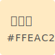
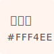
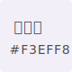
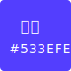
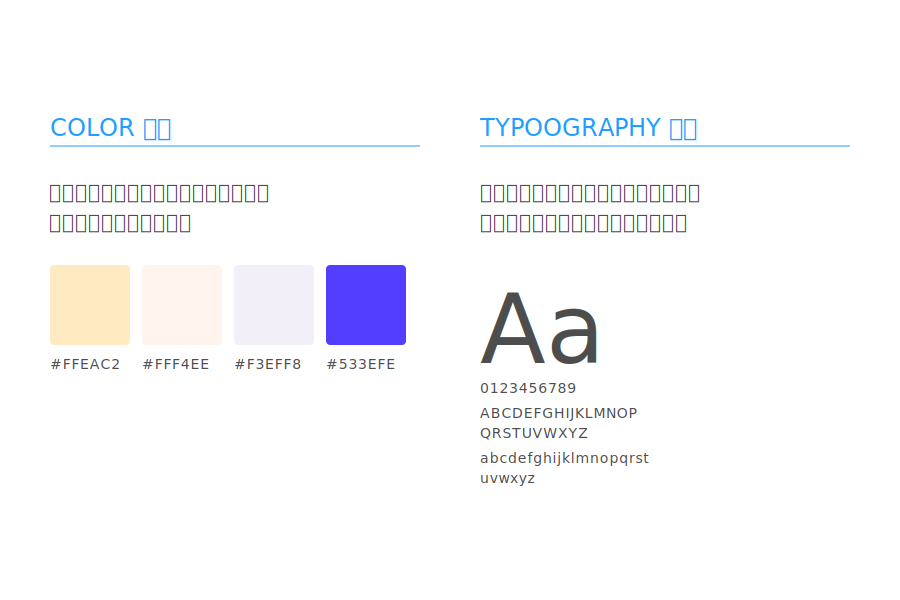
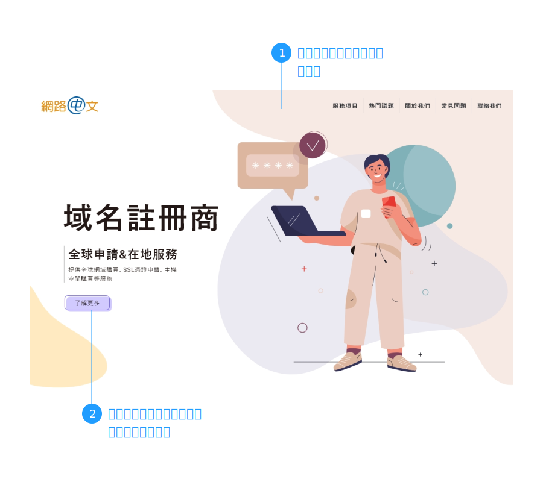
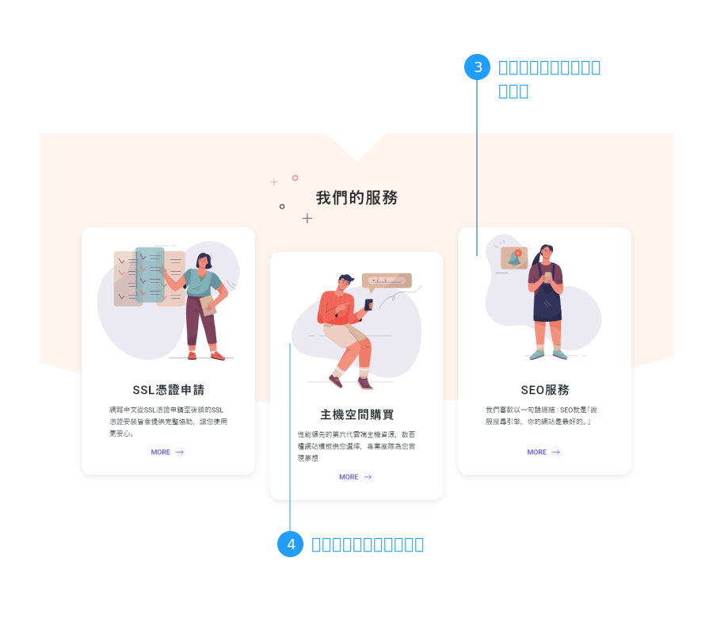

活潑、俏皮、可愛
扁平化的2D插圖，具有色塊單純、易延伸拓展的特性，也可以在不同尺寸的裝置上呈現一致的風格，營造可愛、親近的氛圍。接下來，讓我們一起探索向量2D在網頁上的應用吧：
1. 流線裝飾背景
不同於傳統直角背景，流線、波浪背景帶來新鮮感，整體視覺更加活潑，文字和圖示彼此具有流動性，產生空間感。
2. 統一的2D風格圖示
在風格上，會挑選合適的向量2D的屬性，包含圖示上所有點、線、面的相關位置，以及填色、形狀、透明度...等，具有一致性。且向量圖像不受解析度影響，可以為網頁帶來更快的載入速度。
1. 使用者視覺體驗
與傳統圖片不同，向量圖式可以做為說明圖，讓使用者更了解產品。
2. 適合族群及產業
(○)流程為主的服務業：以2D圖式展現過程，能夠加深使用者印象。
3.建議色彩
   整體配色：以淺色系營造輕鬆自在的氛圍，搭配點綴色的紫色呈現關鍵點。
淺黃色：陽光、友好、樂觀。
淺橘色：柔和、清新。
淺紫色：典雅、成熟。
紫色：科技、創新。
在範例中，我們統一使用【網路中文】的網站內容，進行各種風格的展示，讓使用者更能清楚不同風格的特性，而不會被產業套版模式給侷限，以下為我們的向量2D風格展示說明：
  相信您已經了解極簡帶來的魅力，若您需要網站設計，可以與我們聯繫，讓我們團隊為您提供客製化的方案。